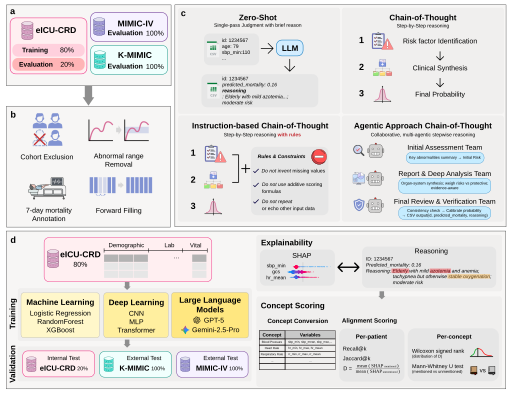
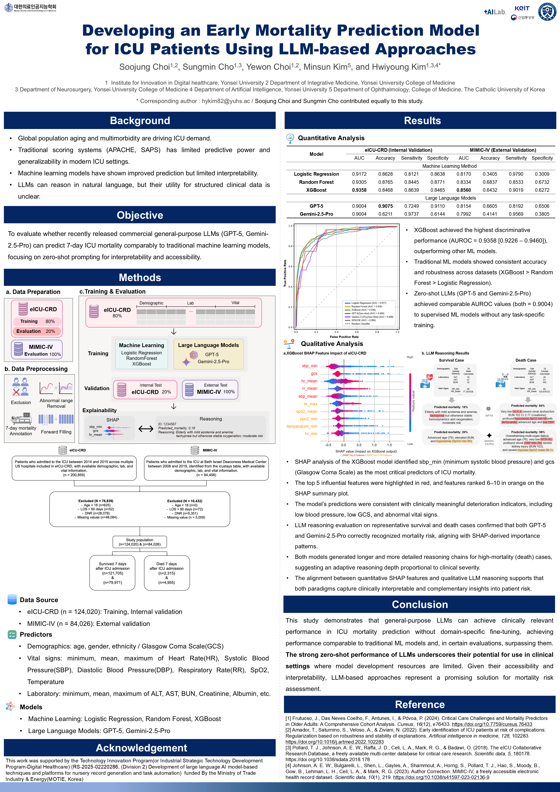
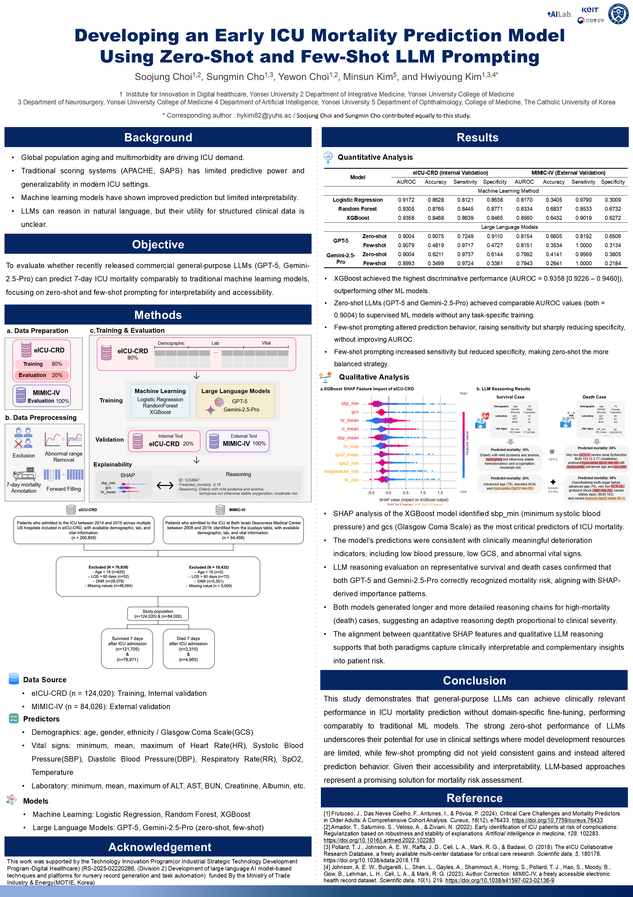
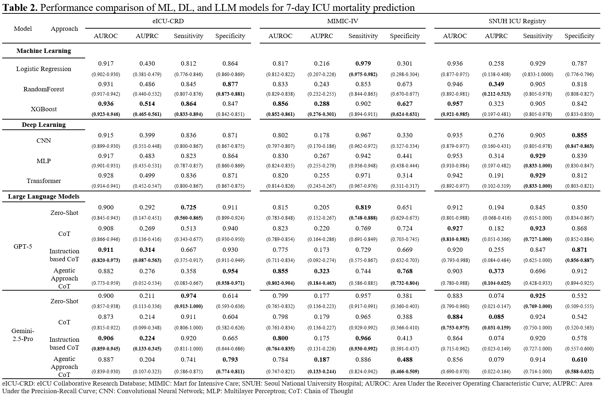
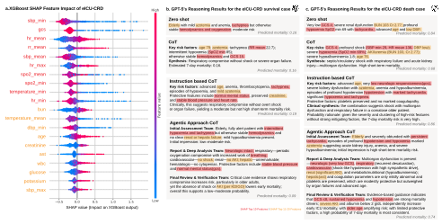

Thumnail. Overall Framework
💡
Summary
- Project Timeline: KoSAIM 2025 Poster(🏆 Best Poster Award) → AI-BioX 2025 Poster → Critical Care Manuscript (Under review)
| Duration | 2025.05 - 2026.07 |
|---|---|
| Role | Co-First Author |
| Research Area | Clinical AI · Large Language Models |
| Keywords | LLM · Clinical AI · ICU · Explainable AI |
| Research Output | 2 Poster accepted / 1 Prize, |
| 1 Journal - Under review |
| KoSAIM | AI-BIoX | Critical Care | |
|---|---|---|---|
| Prompting | Zero-shot | Zero + Few-shot | 4 Prompting Strategies |
| LLM | GPT-5, Gemini | GPT-5, Gemini | GPT-5, Gemini |
| ML Models | LR, RF, XGBoost | LR, RF, XGBoost | ML + DL (6 models) |
| External Validation | MIMIC-IV | MIMIC-IV | MIMIC-IV + K-MIMIC |
| Explainability | SHAP | SHAP + LLM Reasoning | SHAP–LLM Alignment |
| Trustworthiness | - | - | Clinician Evaluation |
| Publication Stage | Poster | Poster | Journal Submission |
Research Evolution
KoSAIM 2025 | First Research Milestone 🏆 Best Poster Award
Conference: Korean Society of Artificial Intelligence in Medicine
Poster title: Developing an Early Mortality Prediction Model for ICU Patients Using LLM-based Approaches
Conference Poster 🏆Best Poster Award - LLM/Agent Track
본 연구는 일반 목적 대규모 언어모델(LLM)이 구조화된 전자의무기록(Structured EHR)만을 활용하여 중환자실(ICU) 조기 사망을 예측할 수 있는지를 탐색하는 것에서 시작되었습니다. 기존의 머신러닝 기반 예측 모델과 GPT-5, Gemini-2.5-Pro를 비교하여 Zero-shot 프롬프팅만으로도 경쟁력 있는 예측 성능을 보일 수 있는지를 검증하였습니다. 또한 SHAP 기반 설명가능성 분석과 LLM의 추론 결과를 함께 비교하여 임상적 해석 가능성을 평가하였습니다.

📌 Key Contribution
- General-purpose LLM 기반 ICU 조기 사망 예측
- Zero-shot Prompting 성능 평가
- SHAP 기반 설명가능성 분석
- GPT-5와 Gemini 비교 평가
- 🏆 KoSAIM 2025 Best Poster Award (LLM & Agent Track)
AI-BIoX 2025 | Second Milestone - Research Extension
Conference: AI-BioX ConfEX Grand Summit
KoSAIM에서 제안한 연구를 기반으로 실험을 확장하여 Few-shot Prompting을 추가하고, LLM이 생성한 추론 과정의 임상적 타당성을 보다 심층적으로 분석하였습니다. 단순한 예측 성능 비교를 넘어, 모델이 어떤 근거로 예측을 수행하는지와 그 추론이 임상적으로 해석 가능한지를 함께 평가하여 연구의 완성도를 높였습니다.

📌 Key Contribution
- Few-shot Prompting 추가 평가
- GPT-5와 Gemini 추론 비교
- 정량적 성능과 정성적 추론 분석
- 임상적 해석 가능성 평가
Critical Care Journal Submission | Full Research
Title: Explainable Early ICU Mortality Prediction Using General-Purpose Large Language Models and Structured EHR
Status: Under Review
포스터 발표에서 얻은 결과를 기반으로 연구를 대폭 확장하여 Critical Care 저널 투고용 논문으로 발전시켰습니다. 기존 연구에 다국가 ICU 코호트(MIMIC-IV, eICU-CRD, K-MIMIC)를 추가하여 일반화 성능을 검증하였으며, ML·DL·LLM을 포함한 다양한 모델을 비교하였습니다. 또한 다양한 Prompting전략과 SHAP–LLM 정렬 분석, 의료진 신뢰도 평가를 포함하여 모델의 예측 성능뿐 아니라 설명가능성과 임상적 활용 가능성까지 종합적으로 평가하였습니다.
🎯 What problem did I solve?
1. Background
Early ICU mortality prediction is essential for timely clinical decision-making, but conventional machine learning models require institution-specific development and often provide limited interpretability. Although recent large language models (LLMs) have shown promising reasoning capabilities, their ability to perform reliable clinical prediction from structured electronic health records remains largely unexplored.
❓ Research Questions
- Can general-purpose LLMs predict ICU mortality without task-specific fine-tuning?
- Do LLMs generalize across different healthcare systems?
- Does LLM-generated reasoning align with clinically meaningful predictors?
- Can clinicians trust LLM-generated explanations?
🎯 Objective
To evaluate the predictive performance, generalizability, and clinical trustworthiness of general-purpose LLMs for early ICU mortality prediction using structured EHR data across multinational ICU cohorts.
🧠 How did I solve it?
2. Dataset
- Training Cohort: eICU-CRD, 124,020 ICU stays
-
Test Cohort: MIMIC-IV(84,926 ICU stays), K-MIMIC(6,673 ICU stays)
Three independent ICU cohorts from the United States and South Korea were used to evaluate cross-system generalization.
3. Methods

Data Processing
- Structured EHR preprocessing
- Missing value imputation
- Feature engineering
- Standardized preprocessing pipeline
Model Comparison
- Machine Learning: Logistic Regression, Random Forest, XGBoost
- Deep Learning: CNN, MLP, Transformer
- Large Language Models: GPT-5, Gemini-2.5-Pro
Prompt Engineering
- Zero-shot
- Chain-of-Thought
- Instruction-based CoT
- Agentic CoT
Explainability
- SHAP analysis
- SHAP–LLM reasoning alignment
- Clinician trustworthiness evaluation
📊 What were the results?
4. Results
- Finding 1: General-purpose LLMs achieved competitive discrimination without any task-specific fine-tuning, approaching the performance of supervised machine learning models.
- Finding 2: Zero-shot prompting provided stable and competitive performance, while increasingly complex prompting strategies produced only modest improvements.
- Finding 3: GPT-5 reasoning consistently focused on clinically important predictors identified by SHAP, demonstrating strong agreement between model explanations and statistical feature importance.
- Finding 4: Medical experts rated GPT-5 explanations as generally trustworthy, supporting the clinical interpretability of LLM-generated reasoning despite moderate inter-rater agreement.

Table 1. Main performance

Figure 2. Alignment between XGBoost SHAP ↔ GPT-5 Reasoning txt
5. Discussion & Limitation
Discussion
- General-purpose LLMs demonstrated strong zero-shot capability for structured clinical prediction.
- Model reasoning aligned with clinically relevant predictors, suggesting potential as interpretable clinical decision-support tools.
- LLMs may complement rather than replace conventional machine learning models in real-world ICU settings.
Limitations
- Lower precision-recall performance under severe class imbalance.
- Proprietary LLMs limit reproducibility.
- Clinician trustworthiness evaluation involved only two raters.
- Prospective validation is required before clinical deployment.
👩💻 What was my contribution?
- Research planning and study design
- Structured EHR preprocessing pipeline
- Prompt engineering for multiple LLM strategies
- LLM inference pipeline development
- Model benchmarking across multinational cohorts
- SHAP-based explainability analysis
- Result interpretation and visualization
- Manuscript writing
💡 What did I learn?
Technical Insight
정확한 모델을 구축하는 것은 하나의 단계에 불과함을 체감할 수 있었습니다. 재현가능한 평가 파이프라인을 설계하고 설명가능성을 통해 모델의 동작을 이해하는 것 또한 신뢰할 수 있는 AI 시스템을 개발하는 데 있어서 매우 중요하다는 것을 체가할 수 있는 프로젝트였습니다.
Building an accurate model is only the first step. Designing reproducible evaluation pipelines and understanding model behavior through explainability are equally important for developing reliable AI systems.
Research Insight
연구를 바라보는 관점을 “AI가 정확한 예측을 할 수 있는가?”에서 “임상의가 AI가 생성한 결정을 신뢰할 수 있는가?”로 전환하게 되었습니다. 어떤 도메인이든, 도메인의 실무자가 사용하는 AI는 성능 지표 뿐만 아니라 투명성, 일반화 가능성, 그리고 실용적인 사용성으로도 평가되어야 한다는 것을 깨달았습니다.
This project shifted my research perspective from "Can AI make accurate predictions?" to "Can clinicians trust AI-generated decisions?". I realized that future clinical AI should be evaluated not only by performance metrics but also by transparency, generalizability, and practical usability.